Префектура Окаяма · город Окаяма · архитектура и еда
Бетон Маэкавы и обед из тофу: чем жив город Окаяма
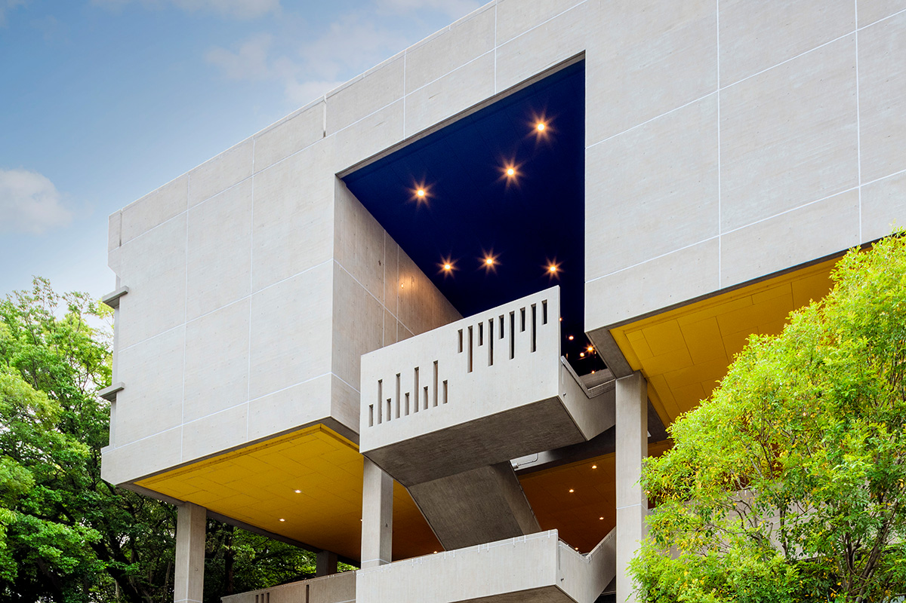
Окаяму отстраивали заново после пожара 1945 года, и город выбрал современную архитектуру своим новым языком. Рассказываем, где с ней встречаться и что съесть по дороге.
История
Город, построенный заново
В 1945 году воздушный налёт оставил от центра Окамы выжженное поле. Культура вернулась быстро: в 1948 году город пригласил к себе «Ниттэн», главную художественную выставку страны, а в 1949-м собрал комиссию по восстановлению сгоревшей резиденции префектуры. Конкурс выиграл Кунио Маэкава (1905–1986), ученик Ле Корбюзье и один из родоначальников японского модернизма.
С зданий Маэкавы и начался новый город. Их здесь много, и маршрут по ним хорошо ложится на прогулку: функциональность в них всегда уравновешена художественностью и следами ручной работы, а между делами можно поесть тофу или сычуаньского супа.
Архитектура
Бетон Маэкавы
Резиденция префектуры
Новое здание префектуры открылось в 1957 году, и тогдашний губернатор Юкихару Мики (1903–1964) назвал его «домом жителей префектуры». Фасад собран из железа и стекла в сплошную навесную стену, главный корпус поднят на пилоны, а за ним перпендикулярно тянется корпус заседаний. У парадного входа нет подъезда для машин: пешехода здесь берегут. Архитектура открыто говорит о вере в демократию первых послевоенных лет, и в этом смысле здание живёт как памятник своей эпохе.
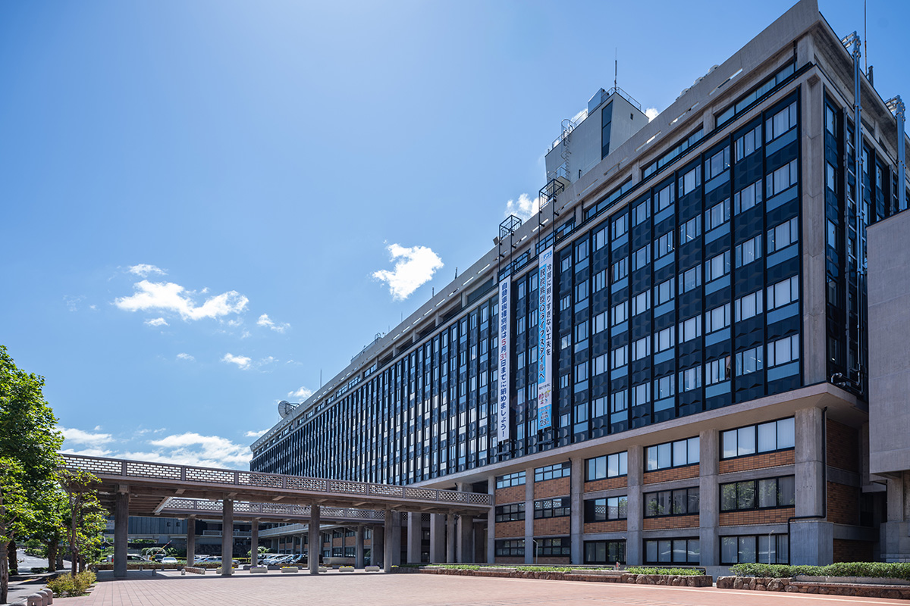
Здание префектуры Окаямы
- Адрес
- префектура Окаяма, город Окаяма, район Кита, Утисанге, 2-4-6
- Телефон
- +81 86-224-2111
- Часы работы
- 8:30–17:15
- Выходные
- суббота, воскресенье, праздники, новогодние каникулы
- Цены
- бесплатно
- Сайт
- pref.okayama.jp
Культурный центр Тэндзинъяма
«Тэндзинъяма» открылся в 1962 году как генеральный культурный центр префектуры и до сих пор ощущается как скульптура: грубый бетон сохранил следы опалубных досок, внешняя лестница будто вылетает из стены в воздух, а разрезы в её перилах, по замыслу, повторяют движение людей. Под жёлтым потолком главный объём стоит на одних колоннах: приём, который Маэкава унаследовал у Ле Корбюзье. Внутри выставочные залы, концертный зал и репетиционные комнаты соединяются в один маршрут, по которому горожане ходят на выставки и концерты.
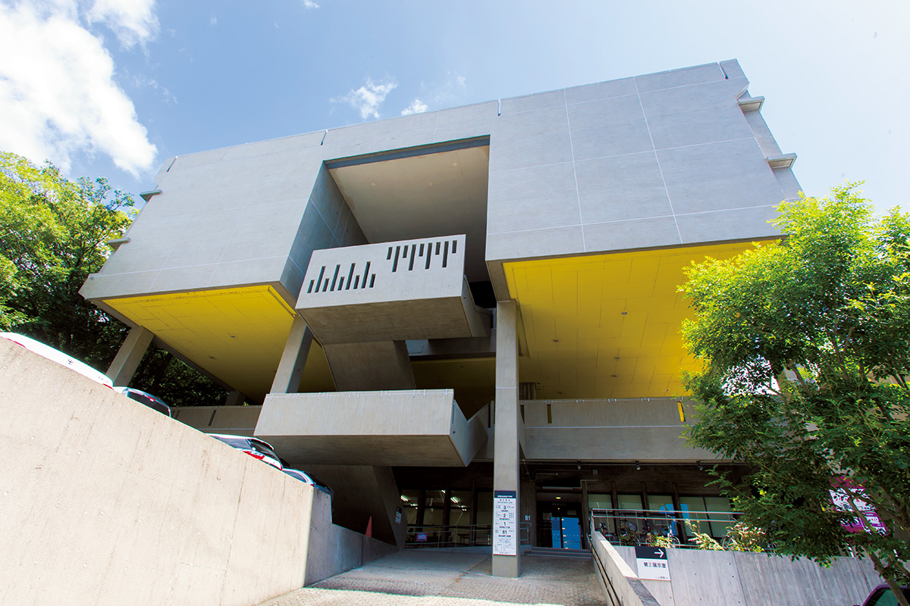
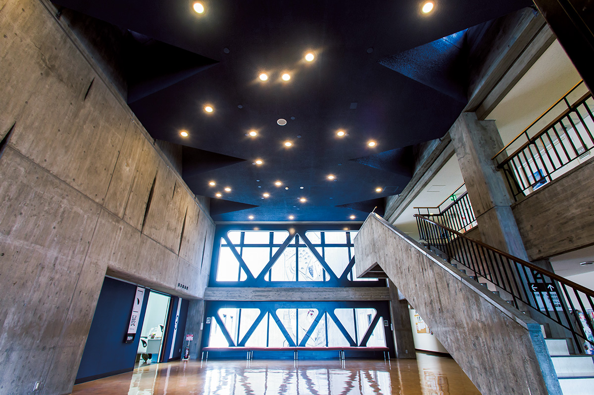
Культурный центр Тэндзинъяма
- Адрес
- префектура Окаяма, город Окаяма, район Кита, Тэндзинтё, 8-54
- Телефон
- +81 86-226-5005
- Часы работы
- 9:00–18:00
- Выходные
- понедельник, новогодние каникулы (28 декабря по 4 января)
- Цены
- осмотр бесплатно (на отдельные мероприятия бывает билет)
- Сайт
- tenplaza.info
Что построили после
Поколение, выросшее на бетоне Маэкавы, продолжило линию. «Утисанге-сквер», здание окаямского кредитного союза, построил Тадао Андо, лауреат Притцкеровской премии: сквозной на три этажа холл освещён только уличным светом и узкими прорезями ламп, а кривые стены делают пространство почти фантастическим. Университетский холл Дзюнко Фукутакэ построило бюро SANAA Кадзуё Сэдзимы и Рюэ Нисидзавы, тоже Притцкеровских лауреатов: семь лёгких крыш на тонких опорах позволяют войти с любой стороны, и кампус свободно перетекает в улицу.
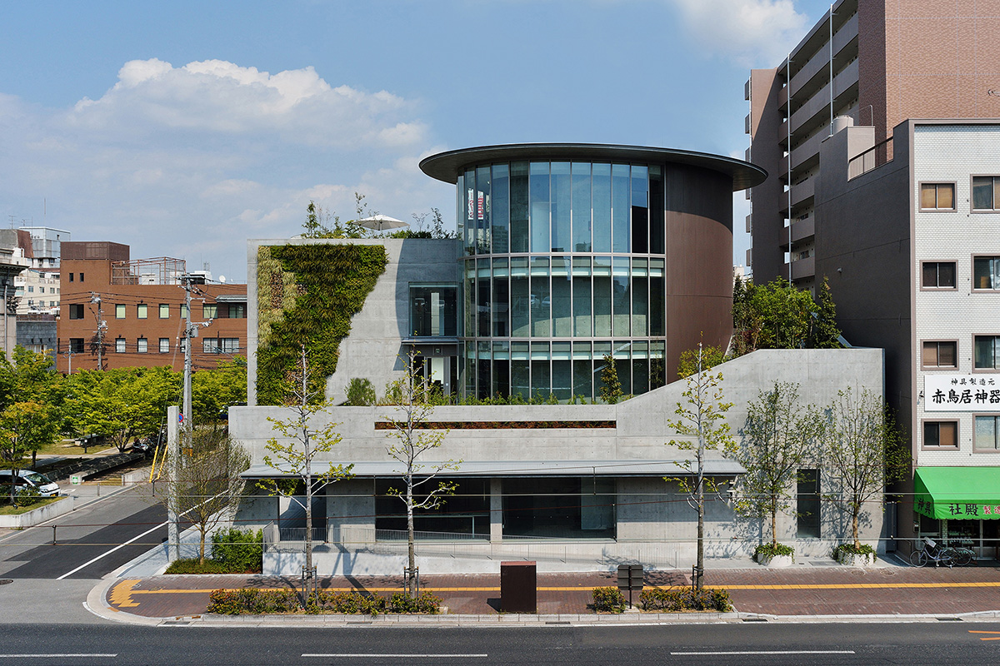
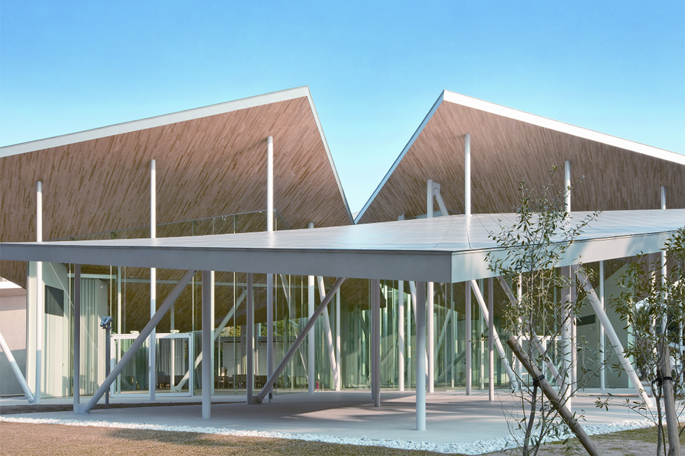
«Утисанге-сквер»
- Адрес
- префектура Окаяма, город Окаяма, район Кита, Утисанге, 1-7-1
- Телефон
- +81 86-223-1710 (лучше позвонить заранее)
- Часы работы
- 9:00–17:00, осмотр до 16:00
- Выходные
- воскресенье, праздники
- Цены
- бесплатно
Холл Дзюнко Фукутакэ
- Адрес
- префектура Окаяма, город Окаяма, район Кита, Сикадатё, 2-5-1
- Телефон
- +81 86-235-6826
- Часы работы
- 8:30–17:15
- Выходные
- суббота, воскресенье, праздники, новогодние каникулы
Дома, в которых ночует искусство
Ночевать тоже можно внутри современной архитектуры. Проект A&A (Artist & Architect) строит гостевые дома силами художников и архитекторов, каждый дом задуман с нуля и сдаётся только одной компании за раз: жильё становится работой искусства, в которой «блуждаешь и размышляешь». Дом JONATHAN HASEGAWA принимает до четырёх гостей, LIAM FUJI рассчитан на двоих.
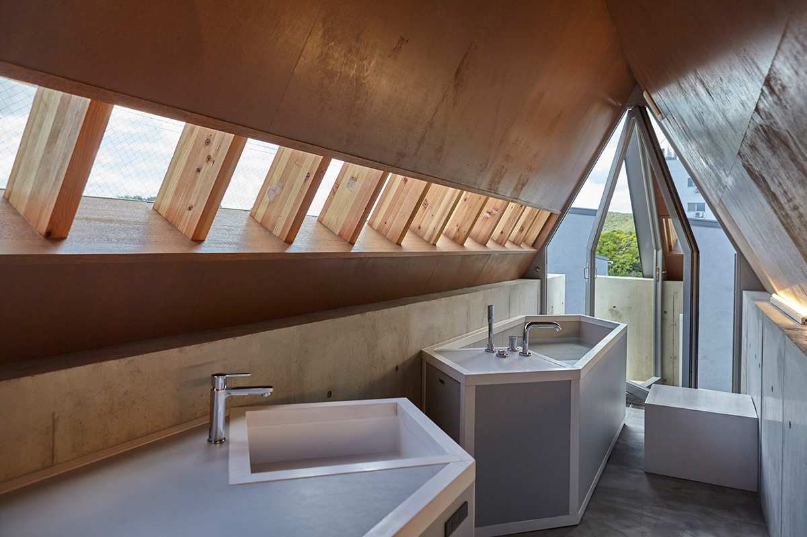
Дом JONATHAN HASEGAWA
- Адрес
- префектура Окаяма, город Окаяма, район Кита, Идзуситё, 1-6-7-1
- Цены
- дом целиком от 39 800 иен до 4 гостей (цены 2025 года, актуальные смотрите на сайте)
- Заезд / выезд
- 15:00 / 11:00
Дом LIAM FUJI
- Адрес
- префектура Окаяма, город Окаяма, район Кита, Тэндзинтё, 9-2-1
- Цены
- дом целиком от 39 800 иен до 2 гостей (цены 2025 года, актуальные смотрите на сайте)
- Заезд / выезд
- 15:00 / 11:00
Музеи
Собрания в двух шагах от замка
Музей Хаясибара
Первой музейной постройкой Маэкавы стал музей Хаясибара (1963). Музей открылся уже после смерти предпринимателя Итиро Хаясибары, собравшего мечи и старинное искусство Востока; вместе с ними в собрании даймё-утварь семьи Икэда, правителей Окаямы. Маршрут залов построен как одна непрерывная линия вокруг внутреннего двора: обойдя периметр, гость снова выходит к холлу. Наружные стены выложены «пережжённым» кирпичом: Маэкава любил материалы с отпечатком ручной работы. Поднимайтесь по широкой лестнице вдоль старой каменной кладки, как у замка, и не пропустите внутренний двор с бамбуком.
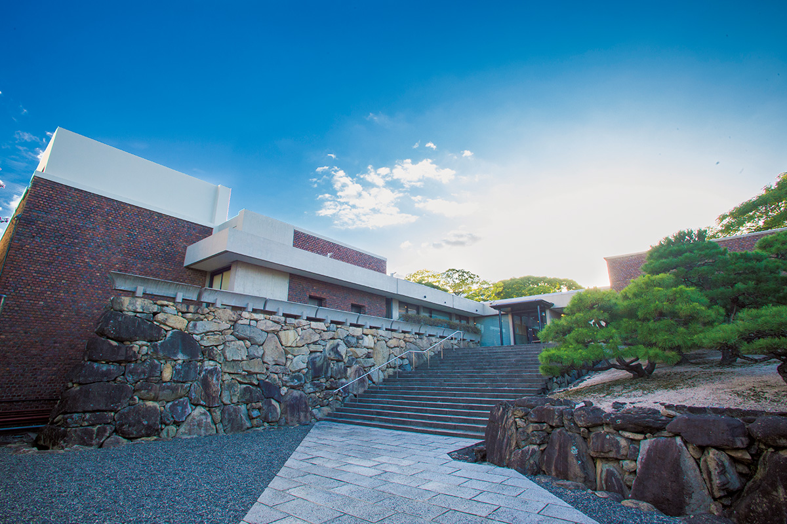
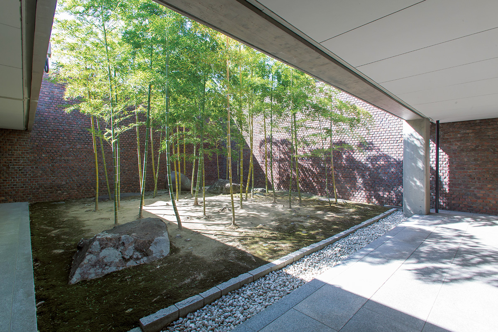
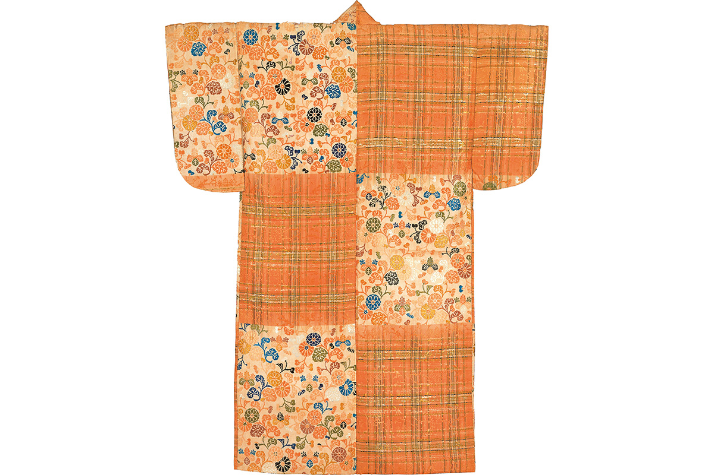
Музей Хаясибара
- Адрес
- префектура Окаяма, город Окаяма, район Кита, Маруноути, 2-7-15
- Телефон
- +81 86-223-1733
- Часы работы
- 10:00–17:00, вход до 16:30
- Выходные
- понедельник (если это праздник, закрыт на следующий день), периоды смены экспозиции, новогодние каникулы
- Цены
- 600 иен на текущую выставку (осень 2026, актуальные смотрите на сайте), школьники и младше бесплатно
Музей Ориента
Музей Ориента ведёт свою линию от Месопотамии до исламской эпохи: около пяти тысяч предметов Западной Азии, от керамики и стекла до мозаик и украшений. Автор здания изучал архитектуру Западной Азии в поездках и перенёс её приёмы в проект; в зале есть кафе, где приятно отдышаться после осмотра.
Музей Ориента
- Адрес
- префектура Окаяма, город Окаяма, район Кита, Тэндзинтё, 9-31
- Телефон
- +81 86-232-3636
- Часы работы
- 9:00–17:00, вход до 16:30
- Выходные
- понедельник (если это праздник, закрыт на следующий день), периоды смены экспозиции, новогодние каникулы
- Сайт
- orientmuseum.jp
Раз в три года город превращается в одну большую выставку: международная триеннале «Окаяма арт саммит» рассыпает работы современных художников по историческим зданиям, и в последний раз это происходило в 2025 году.
Еда
Что съесть по дороге
Куикири «Хаппо»
Столов в «Хаппо» немного, и за ними сидит только одна компания: такой приём японцы называют «итикяку иттэй», что значит «один гость, один приём». Кухня куикири родилась в Кансае как еда для деловых переговоров: блюда готовят и подают одно за другим, съедая сразу. Хозяин и повар Тосия Хамура сам ездит к производителям за окаямскими продуктами сезона и собирает вокруг них обед из многих перемен.
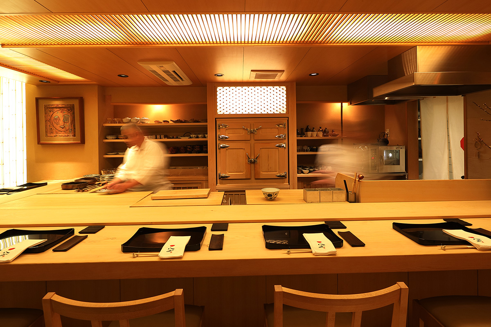
Куикири-рёри «Хаппо»
- Адрес
- префектура Окаяма, город Окаяма, район Кита, Юминотё, 12-6, 1-й этаж
- Телефон
- +81 86-226-8484
- Часы работы
- 12:00–22:00
- Выходные
- вторник
Сычуаньский ужин «Куганбаси»
В тихом квартале Нодаятё прячется «Куганбаси», сычуаньский ресторан, любимый местными. Кроме привычной классики здесь готовят утку, баранину, кролика, острый хотпот «мала» и суп из акульих плавников; ужин начинается с 18:00.
Ресторан «Куганбаси»
- Адрес
- префектура Окаяма, город Окаяма, район Кита, Нодаятё, 1-11-10, здание Симидзу, 1-й этаж
- Телефон
- +81 86-226-5075
- Часы работы
- с 18:00
- Выходные
- понедельник, вторник
Столовая «Ямато»
«Ямато» кормит район с 1948 года. Китайская лапша на бульоне с ароматом даси и морепродуктов и «дэми-кацудон», рис со свиной котлетой под густым соусом дэми-глас, давно стали визитной карточкой Окаямы.
Столовая «Ямато»
- Адрес
- префектура Окаяма, город Окаяма, район Кита, Омотэтё, 1-9-7
- Телефон
- +81 86-232-3944
- Часы работы
- 11:00–15:00, 16:00–19:00
- Выходные
- вторник
Тофу «Окабэ»
Магазин тофу «Окабэ» работает с 1983 года, при нём есть столовая. Толстые куски «агэ-дофу» жарят уже после заказа, «агэ-даси-дофу» подают в горячем бульоне, а свежую юбу, соевую плёнку, снимают с котла на глазах. Сет «окабэ» стоит 1100 иен, сет с «агэ-даси» 1300 иен, тарелка с юбой 1350 иен (с налогом, по данным сайта на октябрь 2026 года).
Тофу «Окабэ»
- Адрес
- префектура Окаяма, город Окаяма, район Кита, Омотэтё, 1-10-1
- Телефон
- +81 86-222-1404
- Часы работы
- 11:30–14:00 (заказ до 13:50)
- Выходные
- четверг, воскресенье, праздники
С собой: данго и кофе
Сладости киби-данго, без которых не уезжают из страны Момотаро, печёт «Эйдзюдо»: фирма с 1946 года делает только их, сохраняя мягкость и гладкую текстуру. Набор из двух коробок с данго и одной с данго в соевой муке стоил 2065 иен без налога (цена 2020 года, актуальные смотрите на сайте). За данго идите в киоски внутри станции Окаяма: фирменный магазин при производстве больше не работает, точек же по префектуре около шестидесяти (eijudo.co.jp).
Кофейные зёрна ищите у ONSAYA COFFEE: у лавки четыре адреса в городе, главный в квартале Хокантё. Дегустационный набор из четырёх сортов зёрен стоил 3340 иен без налога, две бутылки концентрата для латте 3240 иен (цены 2020 года, актуальные смотрите на сайте).
ONSAYA COFFEE
- Адрес
- префектура Окаяма, город Окаяма, район Кита, Хокантё, 2-9-1
- Телефон
- +81 86-252-1103
- Часы работы
- 11:00–18:00
- Сайт
- onsaya.com
Фото: Акико Ямасита, Синтаро Мияваки, Харуна Каваниси, Рёсукэ Фудзитани, Садахо Наито, префектурный культурный центр Тэндзинъяма.